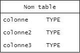
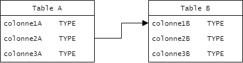
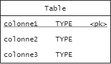
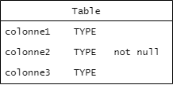
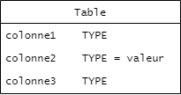
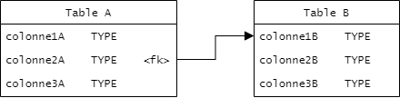

Diagramme entités-relations
Étape de la conception
Conception
Standard de notation
Non normé 1
Nom anglais
Entity-relationship diagram
Le diagramme d’entités-relations sert à représenter graphiquement les éléments à implémenter dans la création de bases de données. Au coeur de ce type de diagramme, on retrouve les entités (elles seront des tables lors d’implémentation) et les relations (qui seront souvent des contraintes d’intégrité relationnelle de type clé étrangère).
Le diagramme d’entités-relations est composé de :
- entités qui représentent les tables;
- colonnes et de leur type;
- relations de dépendance entre les colonnes (qu’elles soient soumises à une contrainte d’intégrité ou non); et
- contraintes d’intégrité relationnelles, uniques et contraintes de colonnes non nullifiables;
- identification d’index.
Les contraintes de validation d’intégrité des valeurs propres au domaine comme les check et contraintes plus complexes mises en place par des déclencheurs (trigger) ne sont pas représentées sur un diagramme entités-relations.
Définition des types de données
La définition des entités se fait à l’aide d’une boîte divisée en deux. La partie supérieure de la boîte contient le nom de la table, la partie inférieure contient les colonnes.
Chaque colonne est identifiée par un nom, qui doit être unique pour la table et d’un type de données. Les principaux disponibles (liste non exhaustive) sont :
- Valeurs entières : TINYINT, SMALLINT, MEDIUMINT, INT, BIGINT
- Valeurs réelles : FLOAT, DOUBLE, NUMERIC, DECIMAL
- Chaînes de caractères : CHAR(n), VARCHAR(n), TEXT
- Date et heure : TIME, DATE, DATETIME, TIMESTAMP
- Données brutes : TINYBLOB, SMALLBLOB, MEDIUMBLOB, BLOB
La disponibilité de type peut varier selon le système de gestion de bases de données utilisé.

Bonnes pratiques !
Comme les mots-clés du langage SQL sont écrits en majuscules, il est fréquent de les retrouver en majuscule dans les diagrammes entités-relations.
La plupart des logiciels de modélisation n’offrent pas d’option pour aligner plusieurs colonnes de texte dans un diagramme. L’utilisation d’une police à espacement constant (monospaced font) facilite l’alignement des contenus.
Gestion des relations
Les relations entre les données en bases de données prennent toujours la forme d’une table dont une colonne reprend les valeurs d’une colonne d’une autre table. Une relation entre deux tables est représentée par une flèche qui part de la table qui utilise les données (table dépendante) vers la table qui les définit (table indépendante).
La flèche peut débuter n’importe où sur l’entité dépendante et terminer n’importe où sur l’entité indépendante, mais pour améliorer la lisibilité du diagramme, il est fortement suggéré de relier les colonnes impliquées dans la relation.

Contraintes de données
Les valeurs d’une table peuvent être soumises à des conditions, appelées contraintes, afin de garantir qu’elles sont valides. Plusieurs types de contraintes existent et elles ont des notations différentes, selon le type.
Clé primaire
La contrainte de clé primaire indique qu’une valeur agit comme identifiant principal de la table. Cette contrainte regroupe la contrainte unique, non nulle et définit un index sur la colonne. Ces contraintes sont incompatibles avec la contrainte de clé primaire, car elles seraient redondantes. La clé primaire est notée par l’ajout de l’indicateur <pk> après l’écriture du type de la colonne et du soulignement de la ligne entière. Si la clé est composée, la contrainte est indiquée pour chaque colonne qui compose la clé primaire.

Non nulle
La contrainte non nulle indique que la colonne doit toujours posséder une valeur différente de nulle. Cette contrainte est indiquée en ajoutant l’expression not null après le type de la colonne.

Valeur par défaut
La contrainte de valeur par défaut permet de préciser que si aucune valeur n’est indiquée lors de l’insertion d’un enregistrement, alors cette valeur est utilisée. Elle est notée en ajoutant le symbole d’égalité suivi de la valeur par défaut (= valeur) après le type de la colonne.

Clé étrangère
La contrainte de clé étrangère indique que les valeurs d’une colonne doivent exister dans une colonne d’une autre table. La clé étrangère implique l’existence d’une relation entre deux tables. La colonne qui possède la clé étrangère (table dépendante) est indiquée en ajoutant l’indicateur <fk> sur le diagramme après le type de la colonne. La flèche de la relation doit obligatoirement débuter à la colonne de la table dépendante et se terminer à la colonne de la table indépendante.
Bien que ce soit presque toujours le cas, il n’est pas obligatoire que la colonne de la table indépendante soit une clé primaire de cette table. De même, bien que presque toutes les relations entre tables soient accompagnées d’une clé étrangère, il n’est pas obligatoire de définir une clé étrangère pour chaque relation.

Unicité, index et autres contraintes
Les autres types de contraintes demandent souvent des informations supplémentaires à leur définition. Par conséquent, elles sont indiquées par un code sur le diagramme et définies dans un fichier à part : le dictionnaire de contrainte. Le code est indiqué entre chevrons simples après le type de la colonne <code>.
Exemple de dictionnaire de contraintes
| Code | Table | Description de la contrainte |
|---|---|---|
| c01 | Table A | Description de la contrainte portant sur colonne2A et colonne3A. |
| c02 | Table B | Description de la contrainte portant sur colonne3B. |


-
La première version de diagrammes d’entités-relations a été proposée à l’apparition des bases de données relationnelles dans Chen 1976. Aujourd’hui, ils s’inspirent et se rapprochent des standards UML. Cependant, comme UML sert d’abord à modéliser des systèmes objet et non des bases de données, les diagrammes entités-relations continuent de se distinguer des notations UML pures. Contrairement à plusieurs diagrammes présentés dans ce guide, les DER ne s’appuient pas sur un document de référence, mais plutôt sur un ensemble de pratiques admises. ↩